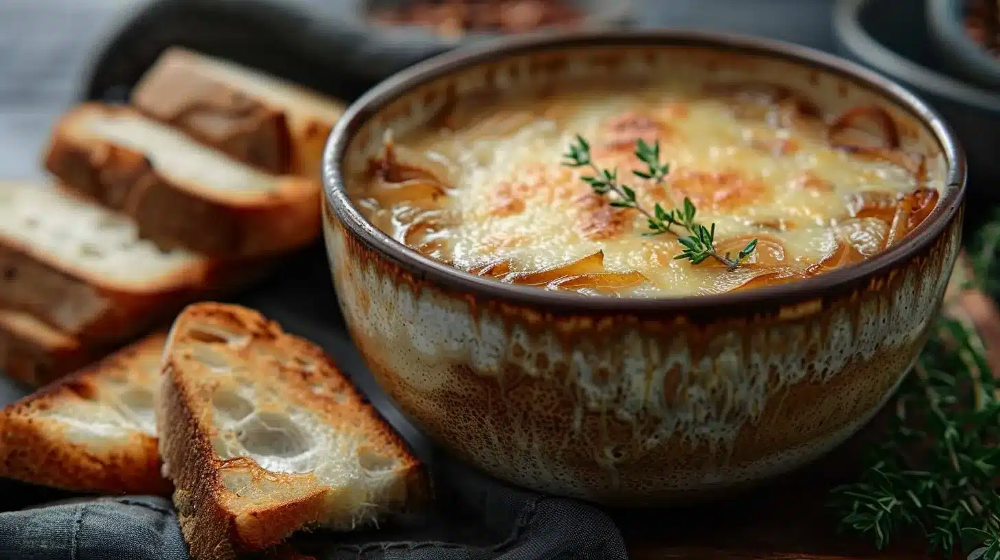
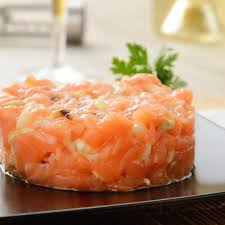

Tomates fraîches, mozzarella et basilic arrosés de glaçage balsamique.

Soupe traditionnelle gratinée au fromage avec des croûtons croustillants.

Saumon frais finement coupé, citron, câpres et herbes fraîches.
Bienvenue chez Bumpkin Restaurant, un restaurant chaleureux au cœur de la ville. Nous sommes passionnés par la cuisine artisanale, préparée à partir d'ingrédients frais, locaux et de saison. Que ce soit pour un déjeuner entre amis ou un dîner romantique, notre équipe se fera un plaisir de vous offrir une expérience culinaire inoubliable.
Tomates fraîches, mozzarella et basilic arrosés de glaçage balsamique.
Soupe traditionnelle gratinée au fromage avec des croûtons croustillants.
Saumon frais finement coupé, citron, câpres et herbes fraîches.
Filet de saumon assaisonné et grillé à la perfection, servi avec une sauce au beurre citronné.
Magret rôti accompagné de pommes caramélisées et d'une sauce au vin rouge.
Risotto crémeux aux champignons sauvages et copeaux de parmesan.
Assortiment de fruits et de guimauves servis avec une riche fondue au chocolat.
Dessert italien classique aux couches de mascarpone, café et cacao.
Délicieuse tarte aux pommes caramélisées servie tiède avec une boule de glace vanille.
Vous pouvez nous contacter par les moyens suivants :